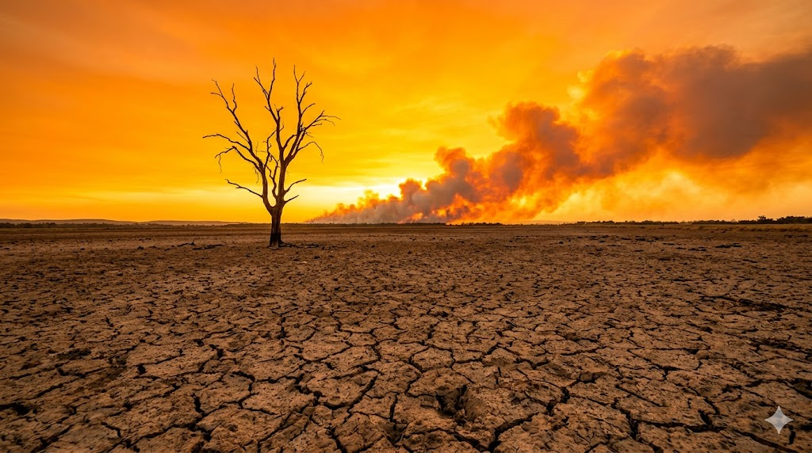

Dengesizleşen yağış rejimleri, dünyanın pek çok bölgesinde uzun süreli kuraklıklara yol açıyor. Bu durum hem tarımsal üretimi hem de içme suyu kaynaklarını tehdit ediyor.
Kritik Uyarı: Kuraklık sadece toprağı değil, gıda güvenliğimizi ve ekonomimizi de doğrudan etkileyen küresel bir krizdir.
